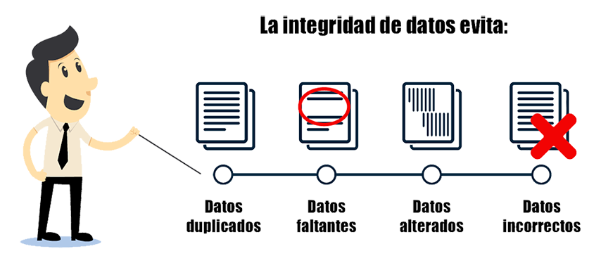

LA INTEGRIDAD:
consiste en asegurarse de que la información no se pierde ni se vea comprometida voluntaria e involuntariamente, el hecho de trabajar con información errónea puede ser tan nocivo para las actividades como perder la información. Para garantizar la integridad de la información se debe considerar lo siguiente:
• Monitorear el tráfico de red para descubrir posibles intrusiones.
• Auditar los sistemas para implementar políticas de auditorías que registre quien hace que, cuando y con qué información.
• Implementar sistemas de control de cambios, algo tan sencillo como por ejemplo comprobar los resúmenes de los archivos de información almacenados en sistema para comprobar si cambian o no.
• copias de seguridad, que en caso de no conseguir impedir que se manipule o pierda la información permitan recuperarla en su estado anterior.
